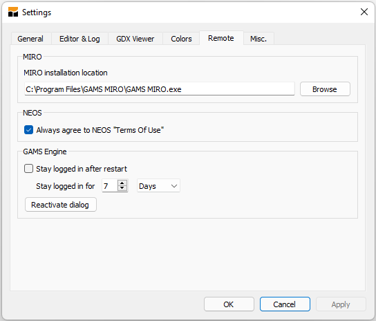
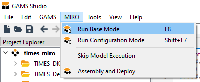
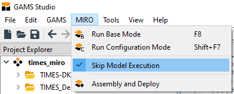
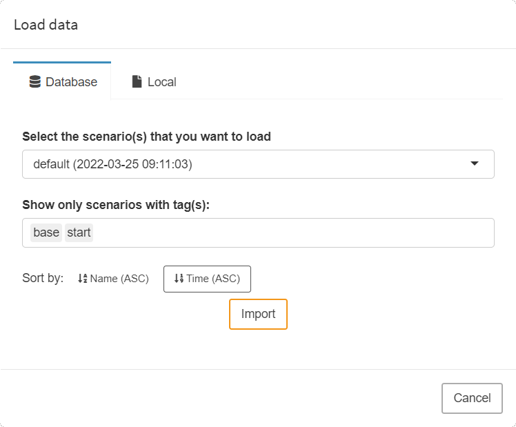
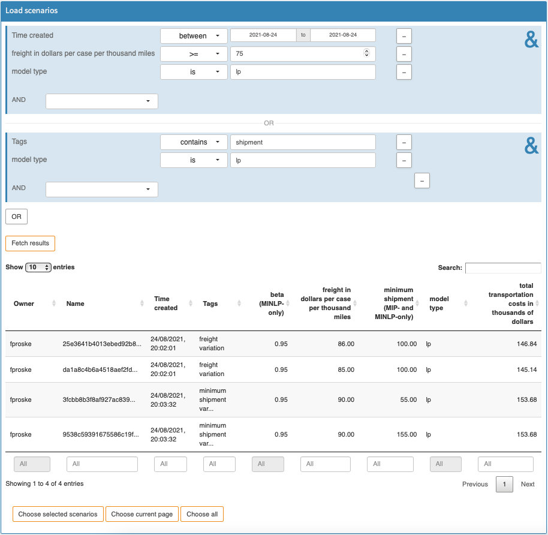
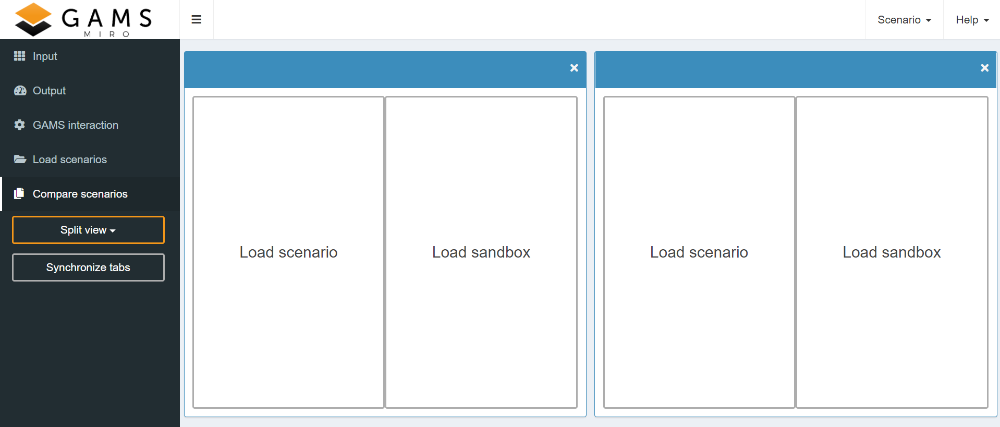
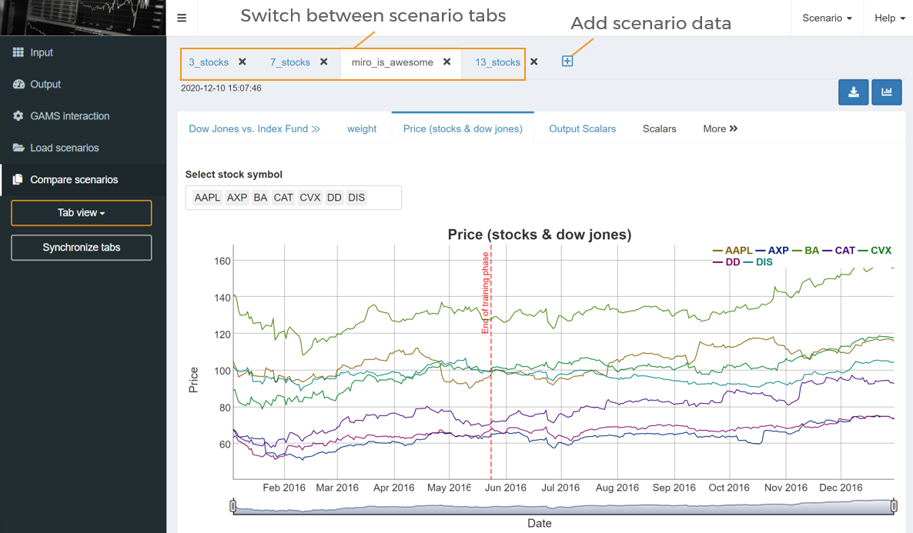
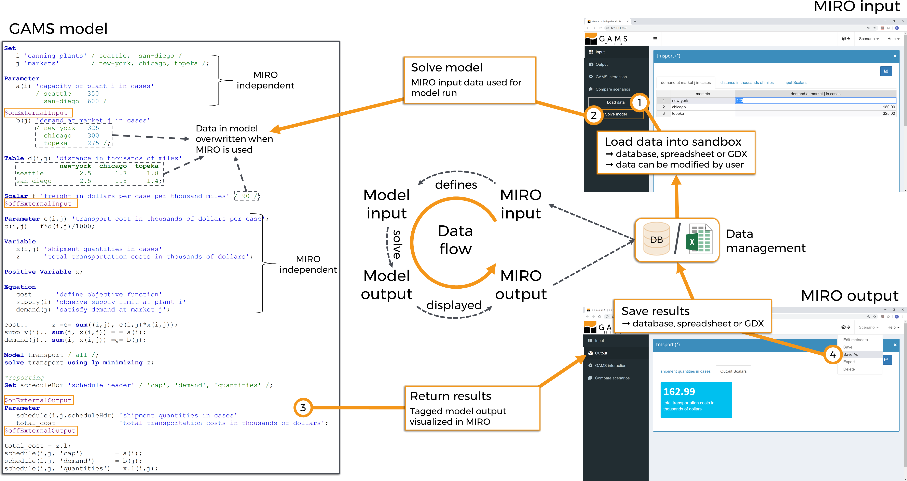
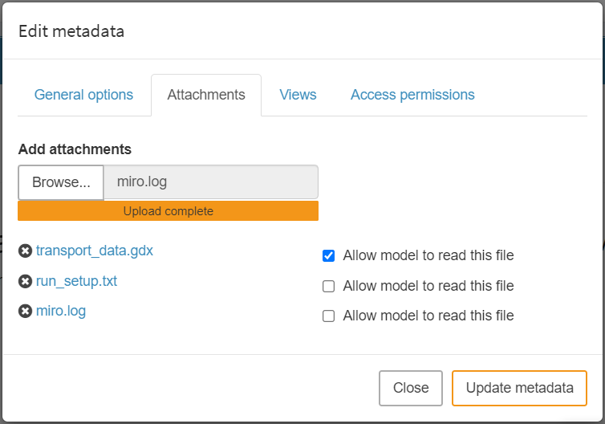

There is a known issue in GAMS Studio when it comes to specifying the MIRO location on macOS. Make sure that the path does not stop at /Applications/GAMS MIRO.app, but points to the executable inside the app bundle: /Applications/GAMS MIRO.app/Contents/MacOS/GAMS MIRO. The /Contents/MacOS/GAMS MIRO part is always the same and needs to be appended to the path of the app bundle.
Getting started
Introduction
This chapter guides you through the first steps of using GAMS MIRO and shows you how to deploy your own GAMS models. You will learn how you can supply your models with input data, generate, display and save the results of your optimization as well as compare different scenarios with each other, everything visually supported by various plotting tools.
Setup
GAMS MIRO is not included in the GAMS distribution and must be installed separately. You can download MIRO here.
After that you should make sure that GAMS and MIRO know about each other. If you work with GAMS Studio, then go to File → Settings → Remote and check whether the MIRO installation location is correct, e.g.:

Note:
On the MIRO side, open MIRO and go to Preferences → Paths. Ensure that the location of the correct GAMS version is specified, e.g.:
Demo Applications
To get a feeling for the use of GAMS MIRO, we recommend to have a look at the demo applications first which you can download here. To use the demo applications, unzip the archive and put the extracted folder miro_lib into the user model library directory. Via GAMS Studio you can find this location by clicking on File → Settings → Misc. → user model library:

Next, if you are using GAMS Studio, go to GAMS → Model Library Explorer (shortcut F6) and click on the new entry GAMS MIRO model collection. There you will find the ready-to-use demo applications:
If you are using the command line, you can use the following command to access the applications: gamslib -lib /location/to/the/miro_lib/mirolib.glb <modelname>, e.g:
> gamslib -lib /location/to/the/miro_lib/mirolib.glb
sudoku
Start GAMS MIRO
Let's take the famous
trnsport
example from George Dantzig to guide us through this
documentation: We own a bunch of factories and wish to
find a least cost shipping schedule that meets the demand
at markets we are shipping to. Furthermore, the capacity
constraints of our factories must not be violated.
In order to launch the MIRO app for this model from
within GAMS Studio, we open the model from the
GAMS MIRO model collection and choose
Run Base Mode from the MIRO menu.

Note:

If you start MIRO via GAMS Studio, note the group in which your model is located in the project explorer. In a group there is always a main file. Make sure that the model you want to use for MIRO is marked as the main file. If this is not the case, you can change it by right clicking on the file in the project explorer → set as main file:
Skip model execution:
In the MIRO menu of GAMS Studio there is the entry "Skip model execution". If this option is activated, the model is not executed before MIRO is started, but MIRO is called directly instead. This can be helpful if the model takes a long time to be solved.

But: This option should be used with caution!
If the model execution is skipped, the GAMS/MIRO data
contract is not created or renewed. This means that
changes made in the model are not communicated to MIRO.
If you have a model that takes a long time to be solved
and you don't want to run through it in order to launch
MIRO, you can simply set the GAMS option
a=c
(action=compile) instead of the option "Skip model
execution". This will only compile the model which is
sufficient to update the data contract. Note that in
this case a new default scenario is created, but it
contains only input data and no output data.
Structure of GAMS MIRO
Below you see the input mask as it appears after the launch.

The screen is essentially divided into two parts:
Navigation bar:
On the left side you can find the navigation bar.
Here you can switch between different views:
-
Input:
Visualization & configuration of input data for the next GAMS run. -
Output:
Visualization of output data. -
GAMS interaction:
While solving a model with GAMS this section shows the current status of your run as well as the log and listing (lst) files. You can add a custom log here too. -
Load scenarios:
"Slice & dice" the database to fetch those scenarios you are interested in. -
Compare scenarios:
Module for the comparison of results / scenarios in a split view mode or two different multi-scenario comparison modes.
In addition, the buttons for loading input data and for starting a GAMS run are located here:
-
Load data:
Load input data for a model run. This can be a local file or existing data from the database. -
Solve model:
Solve the GAMS model with the current set of input data. This will run your GAMS model and collect the results when it finished executing.
Main window:
The main window always displays the content of the section selected by the user in the navigation bar. Here, for example, data is visualized, scenarios are compared and analyses are carried out. In the screenshot above you can also see a README section that is displayed to the user.
Besides navigation bar and main window, some functions are accessible in the header bar:
-
Scenario:
Scenario management - load, save, edit, delete and export scenario data. -
Help:
Link to this documentation, the GAMS World Forum, the command palette with access to all keyboard shortcuts and license information.
Tip:
Take a look at our cheat sheets to get to know the MIRO interface and its components better!
How to work with GAMS MIRO
There are several ways to use GAMS MIRO. However, a typical workflow could look like this:
- Import input data
- Modify the data
- Solve GAMS model
- Inspect the results (in the form of tables and/or charts)
- Save the scenario data or discard the results
- In addition, already saved results can be re-imported and compared at any time.
What is a scenario? What is a sandbox scenario? What
data is used for a model run?
To understand the MIRO data concept, what a scenario is and how it differs from a sandbox scenario, you should have a look at the sections data concept and scenario concept!
Import data
A GAMS MIRO app is quite useful if there is data to be visualized, e.g. in the form of tables, diagrams or other charts. This applies to output data as well as input data. Input data that is to be visualized in MIRO can be imported either from existing scenarios in the database or via a local file (currently, this can be a MIROSCEN file, a GDX container, an Excel spreadsheet, or CSV files). A MIROSCEN file is a special file format used by MIRO to export and import a complete MIRO scenario. In contrast to other supported file formats like GDX, Excel or CSV, a MIROSCEN file includes metadata such as tags, views, attachments etc.
To import such data, click on the Load data button in the navigation bar. The following dialog pops up:


You can decide whether you want to import an
existing scenario from the database or load a file from
your local computer. Scenarios that you have previously
named and saved in the MIRO database will be displayed in
Database. When you start a GAMS MIRO app for the
first time, GAMS automatically extracts the data from your
model and loads this data into the database. This happens
every time you rebuild your MIRO app i.e. every time you
launch it in the
development mode
via GAMS Studio or the command line. A special scenario
with the name default is created for this purpose
and overridden every time you rebuild your app!
Tip:
Every time you start a MIRO app in development mode (via GAMS Studio or the command line), the data relevant to MIRO is extracted from your model and stored in the MIRO database as a special scenario named default.
To import a file from your local machine, either in the form of a MIROSCEN file, a GDX container, an Excel spreadsheet or a CSV file, select the menu item Local and click on browse. Navigate to the directory where your file resides and select it. Confirm the data import with a click on import. If you started with an empty sheet, a new, unnamed scenario is now shown in the interface. To save it, click on Save as and give it a name.
Note:
When importing CSV data, delimiters other than the comma are also supported. The currently supported delimiters are: , tab ; | :.
Excel spreadsheet - import rules


Instead of importing all the datasets for your model, you can also select the symbols to import manually. To do so, click on Manually choose datasets and choose those symbols to be imported from the uploaded spreadsheet. This will cause MIRO to ignore other datasets.
Import multiple scenarios on startup
In
addition to the options mentioned above, which can be
accessed directly from MIRO, (multiple) scenarios can also
be imported automatically when starting an application. To
do this, the scenarios to be imported (MIROSCEN, GDX, CSV
or Excel files) must be put in the folder
data_<modelname> (located
in the model directory). With the next start of MIRO,
those scenarios are imported automatically. Note that in
development mode MIRO skips the import of files that have
not changed since the last start.
In addition to scenario data, views can also be imported together with the scenario data. Simply place the JSON file with the view data here as well. The file has to be named <scenarioName>_views.json. For example if you want to provide data in the form of a GDX file and views for a scenario with the name my_scenario, you have to place both my_scenario.gdx and my_scenario_views.json into the data_<modelname> directory.
Data manipulation
The tables that were empty before are now populated. In
the upper part of the main window, you can navigate
between different tabs to switch through the different
GAMS symbols that you have specified in your model.
We can now change the input data. You may want to
edit individual cells, sort by a different column or
add/remove entire records (rows in the table). In our
transport demo you have the option to edit the
capacities, the demand, the distance matrix and several
scalar values:
Solve the model
A click on the Solve model button starts the model
run. In the background GAMS is called and the model
transport.gms is started. The
values set by us in MIRO now serve as input data for the
model.
During the calculations, MIRO automatically
switches to the section GAMS interaction. There you
can see the current
GAMS log and lst files. If you specified a
custom log this is
also shown here.

Note: Since the models of the demo applications are solved very quickly, this step is sometimes hardly visible. The menu entry GAMS interaction can also be viewed at any time after a model run.
As long as the calculations are running in GAMS, the
Stop button on the left can be clicked. A first
click on this button sends an interrupt request to the
running job in order to perform a graceful stop and
collect an incumbent result back from the execution if the
solver supports this feature. A second click sends a
request to stop the running job immediately.
After
the run, the view changes again to the
Output section.
Inspect results
In the Output section the results are visualized.
As with the input data, a distinction is made between GAMS
parameters and scalar values. The GAMS parameters are each
visualized in a separate tab and the scalars are
summarized in a table.
If you have configured a
graphical representation of your data, you can also see it
here. In the model Transport a plot for the
transport schedule is configured in the form of a map, see
figure below.

With a click on the
 button in the upper right corner you can switch between a
plot and the tabular representation of the data.
button in the upper right corner you can switch between a
plot and the tabular representation of the data.
The Costs tab shows the objective function value of
the model calculation in a tile. Like before, you can
switch between graphical and tabular representation with a
click on the
 button.
button.

Download temporary files:
If this option is enabled, all temporarily created files of the model run (like solution reports or the lst and log files) can be downloaded either separately or as a ZIP archive with a click on the button.

Save / export / delete a scenario
The set of all the input and output data is what we call a scenario. Data that is currently loaded in the MIRO interface (in memory) is what we call a sandbox scenario (more on this here). A sandbox scenario can be saved at any point. The menu where you can interact with your currently active scenario can be found in header bar of your MIRO app:

-
Edit metadata
Allows you to edit scenario metadata, i.e. the scenario name and/or the tags assigned as well as file attachments and scenario access permissions. Read more about scenario metadata here. -
Save
Saves the currently active sandbox scenario under an already specified name. Data of the initially loaded scenario is overwritten.
Tip:Unless otherwise configured, the log and lst file of the GAMS run will also be saved and can be accessed when re-loading the corresponding scenario.
-
Save As
Saves the currently active sandbox scenario under an new name. If the sandbox scenario has no name yet, only this option is available for saving.Optionally, you can add tags to the scenario. Tags are stored together with the scenario data. If you want to find a scenario later on, you can search for a given tag. This may help you to better find a certain scenario or a set of scenarios that share certain attributes. Also, if your sandbox scenario contains attachments or you have defined user access permissions, you can adopt these settings for the scenario to be saved.
-
Export
Download of the scenario data in the form of a MIROSCEN file, a GDX container, as an Excel spreadsheet or as CSV files. -
Delete
Delete the scenario from the database.
Finding and loading scenarios
To help you find and load exactly the scenarios you are interested in, MIRO has a powerful Batch Load module that graphically assists you create and execute complex database queries.
Filters can be applied to scenario metadata such as the creation time, scenario name, or optional tags you have assigned to a scenario. You can also filter by any input and output scalars defined in your model as well as any Double-dash parameters and GAMS options. You can combine any of these filters with the logical operators AND and OR:
Tip:
You can search for empty entries (NA) by leaving the field empty if it is a numeric field, or by using the exists and doesn't exist operators for character fields!
You can execute your query by clicking on the Fetch results button. After the results have been retrieved, the page will be updated and you will see a table with the scenarios that correspond to your query.

Tip:
You can change the name and/or job tag(s) of a scenario by double-clicking the corresponding cell in the table. This can be especially useful for scenarios that were generated via a Hypercube Job and have a (SHA-256) hash as name by default.
Once you have found the scenarios you were looking for, you can do one of the following:
-
Delete scenarios:
Remove the selected scenarios. -
Download data:
Download scenario data for external analysis. Here you can find an example of such an external analysis. The data of selected scenarios were analyzed using R in combination with Jupyter Notebook. -
Analyze:
Run one of your customized batch analysis scripts (only visible if you have custom analysis scripts set up). -
Load into sandbox:
Load the selected scenario into the sandbox (only visible if you have selected exactly one scenario). -
Compare:
Interactive scenario comparison: Compare different scenarios directly in split, tab or pivot view. Best suited for a small number of scenarios to be compared (maximum allowed number of scenarios: 10).
Tip:
When comparing or downloading multiple scenarios, it is sometimes useful to name them according to a common naming scheme based on input/output scalars or other metadata such as creation time. This is especially useful for Hypercube scenarios, since their names are generated automatically. MIRO allows you to choose one or more columns of the Batch Load table to be used for naming scenarios. For example, if we select the "freight Cost" and "minimum shipment" columns to name our scenarios, the first scenario (25E3641B...) in the above image will be named "86_100", the second (da1a8c4b...) will be named "85_100", and so on.
Scenario comparison
The scenario comparison mode is useful if you want to compare the input and/or output data of different model runs. Scenarios from the database as well as the currently loaded sandbox scenario can be used for comparison. There are three different types of comparison available, split view, tab view and pivot view mode.
Pivot view
Unlike the split view and tab view, which take your chart configuration into account, here all records are displayed as pivot tables. Also note that the pivot comparison mode always compares the sandbox scenario with other scenarios. The sandbox scenario is therefore also called base scenario in this context.
The data of the sandbox scenario and all selected scenarios are merged into a single table with an additional domain: Scenario. You can add/remove scenarios at any time by clicking the button in the upper left corner. To close the scenarios currently loaded in the pivot mode, click the button in the upper right corner. If you have made changes to your sandbox scenario and want to update the data in the pivot view, click the button.
Views can also be used in pivot view mode. They are attached to the sandbox/base scenario. Thus, the scenario you currently have in your sandbox determines what views will be available to you in the pivot view scenario comparison. To save a new view, you only need to save your sandbox scenario once the new view has been added.
Views from the pivot comparison mode can be managed (imported/exported/deleted) just like normal views via the Views dialog in the Scenario → Edit Metadata menu. You can learn more about views here.
Tip:
If you have opened scenarios in the split or tab view mode and switch to the pivot view, the scenarios from these modes are pre-selected in the load dialog so that you can easily continue using them.
Split view
If two scenarios are to be compared, the split-screen view is particularly suitable. Here the data of two scenarios can be compared side by side.

You can choose between:
-
Load scenario:
Load saved scenario data from the database. -
Load sandbox:
Load the sandbox scenario which is opened in the Input / Output section.
Tip:
If you have opened scenarios in the pivot or tab view mode and switch to the split view, the scenarios from these modes are shown in a "Local" tab.
Tab view
Scenarios can also be loaded into tabs (as you know it from e.g. your internet browser). This allows to compare more than two scenarios including their graphics.

Tip:
If you have opened scenarios in the split or pivot view mode and switch to the tab view, the scenarios from these modes are pre-selected in the load dialog so that you can easily continue using them.
Synchronize tabs
The synchronize tabs option makes comparing scenarios more convenient. It can be used in both the split view and the tab view. As soon as this option is activated via the synchronize tabs button in the navigation bar, the switch to another dataset of a scenario is also performed for all other open scenarios. This means that if you change the dataset to be displayed in one scenario (e.g. switch from 'Price' to 'absolute error' in the image above), the view also changes for all the other scenario(s) loaded in the comparison mode.
Tip:
For many operations in MIRO there are shortcuts. Especially when comparing scenarios it can be helpful to switch through the different tabs with shortcuts. You can display all keyboard shortcuts via the command palette. The command palette can be activated by pressing Ctrl+Alt+Space or by navigating to Help → Command palette!
Data concept
To understand the concept of data exchange between the GAMS model and its MIRO application, let's start with the following illustration:
- Data is loaded into the MIRO interface. These come either from the internal database, from external data sources such as Excel or GDX or are entered manually, but they do NOT come directly from the GAMS model.
- When clicking on solve, the data visible in the MIRO input section is sent to the GAMS model. All data of affected symbols in the model will be overwritten. Symbols that are not visible in MIRO are not touched.
- The model is now run with the updated data.
- Afterwards the results are sent to MIRO and displayed in the output section. From there, data can be saved in the internal database and/or exported as a file.
A little more detail:

Scenario concept
In addition to the data concept, MIRO's scenario concept also needs to be understood.
What is a scenario?
- We call the collection of input and output datasets that result from a particular model run and which are communicated with MIRO a scenario.
- The MIRO user interface can be seen as a sandbox. Data that is loaded into the interface is therefore located in this sandbox as a sandbox scenario.
- Scenarios from the database can be loaded into the sandbox. The data of the sandbox scenario can be modified. Data modifications can come from local files or can be entered manually. A click on save overwrites the original scenario in the database with the modified data. Alternatively, a new scenario can be created using save as. The original scenario in the database remains unchanged then.
- A sandbox scenario can also be initially created as an empty scenario independent of the database and then filled with data (GDX, Excel, CSV). A scenario created in this way initially does not have a name. As long as a scenario is unnamed, i.e. it is not saved in the database with an individual name, the data is shown exclusively in the interface and gets lost if the MIRO application is closed.
- Attachments are part of a scenario. If attachments are added to a sandbox scenario, they are included when saving this scenario.

Scenario metadata
In addition to the classic data of a scenario, which is visualized in the form of tables, widgets and graphics and with which the user interacts primarily for and after a model run, a scenario also consists of metadata. Metadata can be edited under Scenario → Edit metadata. This includes the following:

General options
In the general options tab you can change the scenario name and add/edit scenario tags. As mentioned above, you can search for a given tag in the database. Thus, tags can be used to better find a saved scenario or a set of scenarios that share certain attributes.
Attachments
With the attachments option, you can attach files to the (sandbox) scenario you currently have open. These can be files of any format. MIRO distinguishes between attachments that can be seen and read by your GAMS model and files that can not be seen. For example, if you want to provide data to your model that doesn't need to be visible/modifiable in the UI (e.g. in the form of a GDX container or Excel files), attachments that your model can read are what you are looking for. In case you just want to add some report about a particular scenario, which is irrelevant for the GAMS model, you should not allow the model to read this file. Note that all files that you allow your model to read need to be first downloaded into the working directory before GAMS is executed. Thus, it is advisable to select only those files to be readable that are actually relevant for the optimization run.

Besides this type of attachments, there are also output attachments which allow you to automatically attach files after a GAMS run has been successfully completed. This lets you store additional results alongside the ones displayed in the UI. You can also use such an attachment for the next GAMS run with this scenario. Read more about output attachments here.
Note:
Attachments added to a sandbox scenario are not automatically saved! If you want to apply the changes to a database scenario, you have to save it.
Views
Views are a special type of attachments that store configurations of renderers. An example is the pivot table renderer. Here a view is a snapshot of the current configuration. Below you can see two pivot table views side by side.
Views can either be bound to a scenario like attachments or registered app-wide. From now on, scenario-specific views will be referred to as local views, while app-wide views will be referred to as global views. You can import and export view configurations in the form of JSON files. Each view has an id that has to be unique per GAMS symbol.
Tip:
Views can also be imported automatically when a MIRO application is started by placing the JSON file(s) in the folder data_<modelname>. Note that views are always tied to a scenario. If you want to store views for a scenario called "my-scenario", you would have a GDX file called my-scenario.gdx as well as a views file called my-scenario_views.json inside the data_<modelname> directory. So the file name of the views must start with the name of the scenario you want to attach them to and end with _views.json.
To get a more intuitive understanding of what a view is,
the following videos give an example that leads through
the most important aspects. With the
pivot table
renderer, we can filter and aggregate input and output
data by dragging and dropping domains. The video below
shows how a few actions draw a bar chart of the
distances between canning plants and markets. By
clicking the Add View button we can attach
a local view to the current scenario. This
allows us to return to a configuration later in our
analysis.
We can import, download, and remove local views by navigating to the Scenario → Edit metadata → Views dialog. By clicking the Export button, the selected views are saved in the Download folder as a JSON file, which we can use to share with others or to include as global views in the app.
Global views are bundled with a MIRO app and are scenario-independent. A local view can shadow a global view if it has the same name as the global view. This means that when you apply this view, the configuration of the local view is applied. When the local view is removed, the global view is applied again.
Global views can be bundled with an application by placing a JSON file with the filename views.json in the conf_<modelname> directory. This file can also be created automatically by configuring the views via the Configuration Mode.
Access permissions / Scenario sharing
If multiple users have access to the same MIRO app, they can share scenarios. Shared scenarios can be loaded from the database into the sandbox in the same way as your own scenarios.

Since scenario sharing is much more powerful using MIRO Server, you can find more information about this in the MIRO Server section.
Scenario sharing using MIRO Desktop:
Scenarios can also be shared in MIRO Desktop. However,
unlike MIRO Server, MIRO Desktop does not offer
sophisticated user management including user groups.
Users of a local MIRO Desktop application are
automatically assigned to the only group available,
'users'. As a consequence, scenarios can be shared
either with all users ('users' group) or with no users.
Note:
In contrast to the database used by GAMS MIRO Server, the database for MIRO Desktop is not designed for concurrent use. We therefore recommend to use one database per user for MIRO Desktop applications.
Performance Aspects
The size and/or complexity of a GAMS model does not affect the performance of a MIRO application. As the data concept shows, only data declared as external input and output (data contract) is communicated between the model and the application. The amount of data to be exchanged as well as the complexity of its visualization influence the performance of your application. Important factors are:
-
Number of symbols that are communicated with MIRO
The more symbols you want to display in MIRO, the more tables and charts need to be set up. MIRO renders most of them lazily, that is, only when the user actually activates a particular tab. However, each of the symbols has a slight overhead and you should ask yourself whether displaying all of them is really necessary. For example, it is usually not a good idea to declare each domain set separately as external input. Instead, use the Implicit Set Definition feature of GAMS! This not only saves rendering time in MIRO, but is often better for the user experience as it simplifies data entry. As a rule of thumb, try to limit the number of symbols in your data contract to 50. -
Amount of data that is communicated with MIRO
Each dataset is displayed in MIRO in the form of a table and a graph. The larger the amount of data, the more computationally intensive this process becomes. In addition, the rendering of graphics can vary in complexity. While a simple pie chart is usually rendered fairly quickly, graphs that contain animations can take significantly more time. In the case of very large amounts of data that are only displayed in MIRO for visualization purposes, it may make sense from a performance point of view to communicate only parts of the data with MIRO or to visualize only sections of it, e.g. by aggregating data. -
Table tool to use
MIRO provides several table tools for input symbols, each of which has its advantages and disadvantages. The default input data tool provides a spreadsheet-like feel. However, all data is held in the user's browsers, which becomes problematic when dealing with large amounts of data. If you have larger data sets (>10,000 records and >10 columns), MIRO offers the Big Data Table as well as the MIRO Pivot Table. With these two table types, most of the data is kept on the server side and only fractions of the data are kept in the user's browser. This allows for much larger data sets (>3 million records). - Attachments provide a convenient way to communicate large amounts of data from MIRO to the GAMS model without significantly impacting application performance. Since attachments are communicated as a file and therefore do not require data to be rendered, they require very few computational resources.
Additional Features
Manage multiple scenarios
In this chapter we learned how to configure and solve one scenario at a time. But what if we want to efficiently solve a large number of such scenarios with different parameterizations? To avoid having to configure and solve each scenario individually, there is an option to submit so-called Hypercube jobs. Hypercube jobs allow you to efficiently and automatically create, store and analyze a variety of scenarios. Learn more here.
GAMS MIRO Server
In the most basic setup - GAMS MIRO Desktop - both the MIRO application and GAMS are installed on the same computer and run exclusively on this machine. But MIRO is not limited to this setup: You may also trigger your GAMS jobs to be solved in the cloud. For you nothing changes, the interface remains the same. GAMS MIRO Server also allows you to run both the GAMS execution engine as well as GAMS MIRO in a highly scalable cloud environment. Your optimization applications can then be accessed from any modern web browser.

GAMS MIRO Server adds multi-user and authentication support as well as many enterprise features such as load balancing, rolling updates and much more.